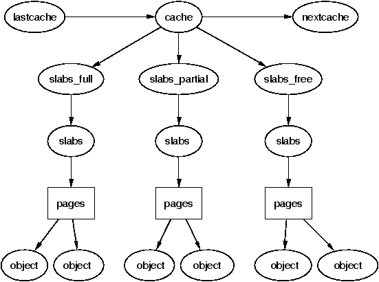
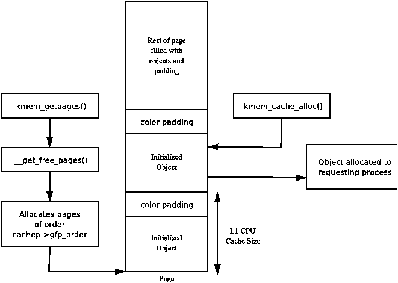
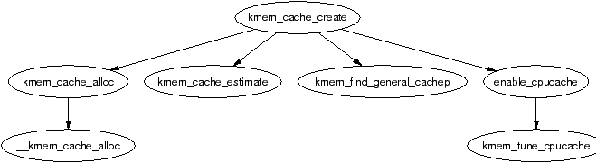
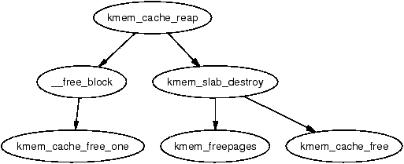
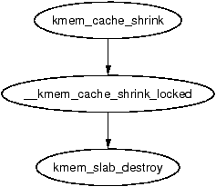
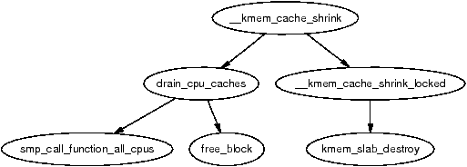
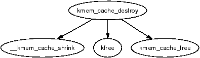
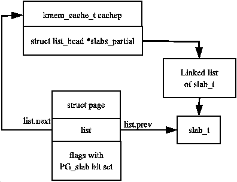
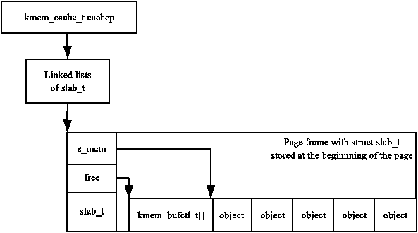
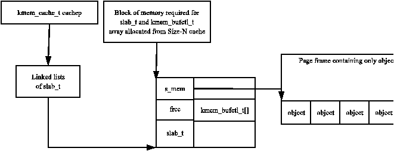

| Figure 8.11: Call Graph: kmem_cache_grow() |
In this chapter, the general-purpose allocator is described. It is a slab allocator which is very similar in many respects to the general kernel allocator used in Solaris [MM01]. Linux's implementation is heavily based on the first slab allocator paper by Bonwick [Bon94] with many improvements that bear a close resemblance to those described in his later paper [BA01]. We will begin with a quick overview of the allocator followed by a description of the different structures used before giving an in-depth tour of each task the allocator is responsible for.
The basic idea behind the slab allocator is to have caches of commonly used objects kept in an initialised state available for use by the kernel. Without an object based allocator, the kernel will spend much of its time allocating, initialising and freeing the same object. The slab allocator aims to to cache the freed object so that the basic structure is preserved between uses [Bon94].
The slab allocator consists of a variable number of caches that are linked together on a doubly linked circular list called a cache chain. A cache, in the context of the slab allocator, is a manager for a number of objects of a particular type like the mm_struct or fs_cache cache and is managed by a struct kmem_cache_s discussed in detail later. The caches are linked via the next field in the cache struct.
Each cache maintains blocks of contiguous pages in memory called slabs which are carved up into small chunks for the data structures and objects the cache manages. The relationship between these different structures is illustrated in Figure 8.1.

Figure 8.1: Layout of the Slab Allocator
The slab allocator has three principle aims:
To help eliminate internal fragmentation normally caused by a binary buddy allocator, two sets of caches of small memory buffers ranging from 25 (32) bytes to 217 (131072) bytes are maintained. One cache set is suitable for use with DMA devices. These caches are called size-N and size-N(DMA) where N is the size of the allocation, and a function kmalloc() (see Section 8.4.1) is provided for allocating them. With this, the single greatest problem with the low level page allocator is addressed. The sizes caches are discussed in further detail in Section ??.
The second task of the slab allocator is to maintain caches of commonly used objects. For many structures used in the kernel, the time needed to initialise an object is comparable to, or exceeds, the cost of allocating space for it. When a new slab is created, a number of objects are packed into it and initialised using a constructor if available. When an object is freed, it is left in its initialised state so that object allocation will be quick.
The final task of the slab allocator is hardware cache utilization. If there is space left over after objects are packed into a slab, the remaining space is used to color the slab. Slab coloring is a scheme which attempts to have objects in different slabs use different lines in the cache. By placing objects at a different starting offset within the slab, it is likely that objects will use different lines in the CPU cache helping ensure that objects from the same slab cache will be unlikely to flush each other. With this scheme, space that would otherwise be wasted fulfills a new function. Figure ?? shows how a page allocated from the buddy allocator is used to store objects that using coloring to align the objects to the L1 CPU cache.

Figure 8.2: Slab page containing Objects Aligned to L1 CPU Cache
Linux does not attempt to color page allocations based on their physical address [Kes91], or order where objects are placed such as those described for data [GAV95] or code segments [HK97] but the scheme used does help improve cache line usage. Cache colouring is further discussed in Section 8.1.5. On an SMP system, a further step is taken to help cache utilization where each cache has a small array of objects reserved for each CPU. This is discussed further in Section 8.5.
The slab allocator provides the additional option of slab debugging if the option is set at compile time with CONFIG_SLAB_DEBUG. Two debugging features are providing called red zoning and object poisoning. With red zoning, a marker is placed at either end of the object. If this mark is disturbed, the allocator knows the object where a buffer overflow occured and reports it. Poisoning an object will fill it with a predefined bit pattern(defined 0x5A in mm/slab.c) at slab creation and after a free. At allocation, this pattern is examined and if it is changed, the allocator knows that the object was used before it was allocated and flags it.
The small, but powerful, API which the allocator exports is listed in Table 8.1.
Table 8.1: Slab Allocator API for caches
One cache exists for each type of object that is to be cached. For a full list of caches available on a running system, run cat /proc/slabinfo . This file gives some basic information on the caches. An excerpt from the output of this file looks like;
slabinfo - version: 1.1 (SMP) kmem_cache 80 80 248 5 5 1 : 252 126 urb_priv 0 0 64 0 0 1 : 252 126 tcp_bind_bucket 15 226 32 2 2 1 : 252 126 inode_cache 5714 5992 512 856 856 1 : 124 62 dentry_cache 5160 5160 128 172 172 1 : 252 126 mm_struct 240 240 160 10 10 1 : 252 126 vm_area_struct 3911 4480 96 112 112 1 : 252 126 size-64(DMA) 0 0 64 0 0 1 : 252 126 size-64 432 1357 64 23 23 1 : 252 126 size-32(DMA) 17 113 32 1 1 1 : 252 126 size-32 850 2712 32 24 24 1 : 252 126
Each of the column fields correspond to a field in the struct kmem_cache_s structure. The columns listed in the excerpt above are:
If SMP is enabled like in the example excerpt, two more columns will be displayed after a colon. They refer to the per CPU cache described in Section 8.5. The columns are:
To speed allocation and freeing of objects and slabs they are arranged into three lists; slabs_full, slabs_partial and slabs_free. slabs_full has all its objects in use. slabs_partial has free objects in it and so is a prime candidate for allocation of objects. slabs_free has no allocated objects and so is a prime candidate for slab destruction.
All information describing a cache is stored in a struct kmem_cache_s declared in mm/slab.c. This is an extremely large struct and so will be described in parts.
190 struct kmem_cache_s {
193 struct list_head slabs_full;
194 struct list_head slabs_partial;
195 struct list_head slabs_free;
196 unsigned int objsize;
197 unsigned int flags;
198 unsigned int num;
199 spinlock_t spinlock;
200 #ifdef CONFIG_SMP
201 unsigned int batchcount;
202 #endif
203
Most of these fields are of interest when allocating or freeing objects.
206 unsigned int gfporder; 209 unsigned int gfpflags; 210 211 size_t colour; 212 unsigned int colour_off; 213 unsigned int colour_next; 214 kmem_cache_t *slabp_cache; 215 unsigned int growing; 216 unsigned int dflags; 217 219 void (*ctor)(void *, kmem_cache_t *, unsigned long); 222 void (*dtor)(void *, kmem_cache_t *, unsigned long); 223 224 unsigned long failures; 225
This block deals with fields of interest when allocating or freeing slabs from the cache.
227 char name[CACHE_NAMELEN]; 228 struct list_head next;
These are set during cache creation
229 #ifdef CONFIG_SMP 231 cpucache_t *cpudata[NR_CPUS]; 232 #endif
233 #if STATS 234 unsigned long num_active; 235 unsigned long num_allocations; 236 unsigned long high_mark; 237 unsigned long grown; 238 unsigned long reaped; 239 unsigned long errors; 240 #ifdef CONFIG_SMP 241 atomic_t allochit; 242 atomic_t allocmiss; 243 atomic_t freehit; 244 atomic_t freemiss; 245 #endif 246 #endif 247 };
These figures are only available if the CONFIG_SLAB_DEBUG option is set during compile time. They are all beancounters and not of general interest. The statistics for /proc/slabinfo are calculated when the proc entry is read by another process by examining every slab used by each cache rather than relying on these fields to be available.
A number of flags are set at cache creation time that remain the same for the lifetime of the cache. They affect how the slab is structured and how objects are stored within it. All the flags are stored in a bitmask in the flags field of the cache descriptor. The full list of possible flags that may be used are declared in <linux/slab.h>.
There are three principle sets. The first set is internal flags which are set only by the slab allocator and are listed in Table 8.2. The only relevant flag in the set is the CFGS_OFF_SLAB flag which determines where the slab descriptor is stored.
Flag Description CFGS_OFF_SLAB Indicates that the slab managers for this cache are kept off-slab. This is discussed further in Section 8.2.1 CFLGS_OPTIMIZE This flag is only ever set and never used
Table 8.2: Internal cache static flags
The second set are set by the cache creator and they determine how the allocator treats the slab and how objects are stored. They are listed in Table 8.3.
Table 8.3: Cache static flags set by caller
The last flags are only available if the compile option CONFIG_SLAB_DEBUG is set. They determine what additional checks will be made to slabs and objects and are primarily of interest only when new caches are being developed.
Table 8.4: Cache static debug flags
To prevent callers using the wrong flags a CREATE_MASK is defined in mm/slab.c consisting of all the allowable flags. When a cache is being created, the requested flags are compared against the CREATE_MASK and reported as a bug if invalid flags are used.
The dflags field has only one flag, DFLGS_GROWN, but it is important. The flag is set during kmem_cache_grow() so that kmem_cache_reap() will be unlikely to choose the cache for reaping. When the function does find a cache with this flag set, it skips the cache and removes the flag.
These flags correspond to the GFP page flag options for allocating pages for slabs. Callers sometimes call with either SLAB_* or GFP_* flags, but they really should use only SLAB_* flags. They correspond directly to the flags described in Section 6.4 so will not be discussed in detail here. It is presumed the existence of these flags are for clarity and in case the slab allocator needed to behave differently in response to a particular flag but in reality, there is no difference.
Table 8.5: Cache Allocation Flags
A very small number of flags may be passed to constructor and destructor functions which are listed in Table 8.6.
Table 8.6: Cache Constructor Flags
To utilise hardware cache better, the slab allocator will offset objects in different slabs by different amounts depending on the amount of space left over in the slab. The offset is in units of BYTES_PER_WORD unless SLAB_HWCACHE_ALIGN is set in which case it is aligned to blocks of L1_CACHE_BYTES for alignment to the L1 hardware cache.
During cache creation, it is calculated how many objects can fit on a slab (see Section 8.2.7) and how many bytes would be wasted. Based on wastage, two figures are calculated for the cache descriptor
With the objects offset, they will use different lines on the associative hardware cache. Therefore, objects from slabs are less likely to overwrite each other in memory.
The result of this is best explained by an example. Let us say that s_mem (the address of the first object) on the slab is 0 for convenience, that 100 bytes are wasted on the slab and alignment is to be at 32 bytes to the L1 Hardware Cache on a Pentium II.
In this scenario, the first slab created will have its objects start at 0. The second will start at 32, the third at 64, the fourth at 96 and the fifth will start back at 0. With this, objects from each of the slabs will not hit the same hardware cache line on the CPU. The value of colour is 3 and colour_off is 32.
The function kmem_cache_create() is responsible for creating new caches and adding them to the cache chain. The tasks that are taken to create a cache are
Figure 8.3 shows the call graph relevant to the creation of a cache; each function is fully described in the Code Commentary.

Figure 8.3: Call Graph: kmem_cache_create()
When a slab is freed, it is placed on the slabs_free list for future use. Caches do not automatically shrink themselves so when kswapd notices that memory is tight, it calls kmem_cache_reap() to free some memory. This function is responsible for selecting a cache that will be required to shrink its memory usage. It is worth noting that cache reaping does not take into account what memory node or zone is under pressure. This means that with a NUMA or high memory machine, it is possible the kernel will spend a lot of time freeing memory from regions that are under no memory pressure but this is not a problem for architectures like the x86 which has only one bank of memory.

Figure 8.4: Call Graph: kmem_cache_reap()
The call graph in Figure 8.4 is deceptively simple as the task of selecting the proper cache to reap is quite long. In the event that there are numerous caches in the system, only REAP_SCANLEN(currently defined as 10) caches are examined in each call. The last cache to be scanned is stored in the variable clock_searchp so as not to examine the same caches repeatedly. For each scanned cache, the reaper does the following
When a cache is selected to shrink itself, the steps it takes are simple and brutal
Linux is nothing, if not subtle.

Figure 8.5: Call Graph: kmem_cache_shrink()
Two varieties of shrink functions are provided with confusingly similar names. kmem_cache_shrink() removes all slabs from slabs_free and returns the number of pages freed as a result. This is the principal function exported for use by the slab allocator users.

Figure 8.6: Call Graph: __kmem_cache_shrink()
The second function __kmem_cache_shrink() frees all slabs from slabs_free and then verifies that slabs_partial and slabs_full are empty. This is for internal use only and is important during cache destruction when it doesn't matter how many pages are freed, just that the cache is empty.
When a module is unloaded, it is responsible for destroying any cache with the function kmem_cache_destroy(). It is important that the cache is properly destroyed as two caches of the same human-readable name are not allowed to exist. Core kernel code often does not bother to destroy its caches as their existence persists for the life of the system. The steps taken to destroy a cache are

Figure 8.7: Call Graph: kmem_cache_destroy()
This section will describe how a slab is structured and managed. The struct which describes it is much simpler than the cache descriptor, but how the slab is arranged is considerably more complex. It is declared as follows:
typedef struct slab_s {
struct list_head list;
unsigned long colouroff;
void *s_mem;
unsigned int inuse;
kmem_bufctl_t free;
} slab_t;
The fields in this simple struct are as follows:
The reader will note that given the slab manager or an object within the slab, there does not appear to be an obvious way to determine what slab or cache they belong to. This is addressed by using the list field in the struct page that makes up the cache. SET_PAGE_CACHE() and SET_PAGE_SLAB() use the next and prev fields on the page→list to track what cache and slab an object belongs to. To get the descriptors from the page, the macros GET_PAGE_CACHE() and GET_PAGE_SLAB() are available. This set of relationships is illustrated in Figure 8.8.

Figure 8.8: Page to Cache and Slab Relationship
The last issue is where the slab management struct is kept. Slab managers are kept either on (CFLGS_OFF_SLAB set in the static flags) or off-slab. Where they are placed are determined by the size of the object during cache creation. It is important to note that in 8.8, the struct slab_t could be stored at the beginning of the page frame although the figure implies the struct slab_ is seperate from the page frame.
If the objects are larger than a threshold (512 bytes on x86), CFGS_OFF_SLAB is set in the cache flags and the slab descriptor is kept off-slab in one of the sizes cache (see Section 8.4). The selected sizes cache is large enough to contain the struct slab_t and kmem_cache_slabmgmt() allocates from it as necessary. This limits the number of objects that can be stored on the slab because there is limited space for the bufctls but that is unimportant as the objects are large and so there should not be many stored in a single slab.

Figure 8.9: Slab With Descriptor On-Slab
Alternatively, the slab manager is reserved at the beginning of the slab. When stored on-slab, enough space is kept at the beginning of the slab to store both the slab_t and the kmem_bufctl_t which is an array of unsigned integers. The array is responsible for tracking the index of the next free object that is available for use which is discussed further in Section 8.2.3. The actual objects are stored after the kmem_bufctl_t array.
Figure ?? should help clarify what a slab with the descriptor on-slab looks like and Figure ?? illustrates how a cache uses a sizes cache to store the slab descriptor when the descriptor is kept off-slab.

Figure 8.10: Slab With Descriptor Off-Slab
Figure 8.11: Call Graph: kmem_cache_grow()
At this point, we have seen how the cache is created, but on creation, it is an empty cache with empty lists for its slab_full, slab_partial and slabs_free. New slabs are allocated to a cache by calling the function kmem_cache_grow(). This is frequently called “cache growing” and occurs when no objects are left in the slabs_partial list and there are no slabs in slabs_free. The tasks it fulfills are
The slab allocator has got to have a quick and simple means of tracking where free objects are on the partially filled slabs. It achieves this by using an array of unsigned integers called kmem_bufctl_t that is associated with each slab manager as obviously it is up to the slab manager to know where its free objects are.
Historically, and according to the paper describing the slab allocator [Bon94], kmem_bufctl_t was a linked list of objects. In Linux 2.2.x, this struct was a union of three items, a pointer to the next free object, a pointer to the slab manager and a pointer to the object. Which it was depended on the state of the object.
Today, the slab and cache an object belongs to is determined by the struct page and kmem_bufctl_t is simply an integer array of object indices. The number of elements in the array is the same as the number of objects on the slab.
141 typedef unsigned int kmem_bufctl_t;
As the array is kept after the slab descriptor and there is no pointer to the first element directly, a helper macro slab_bufctl() is provided.
163 #define slab_bufctl(slabp) \ 164 ((kmem_bufctl_t *)(((slab_t*)slabp)+1))
This seemingly cryptic macro is quite simple when broken down. The parameter slabp is a pointer to the slab manager. The expression ((slab_t*)slabp)+1 casts slabp to a slab_t struct and adds 1 to it. This will give a pointer to a slab_t which is actually the beginning of the kmem_bufctl_t array. (kmem_bufctl_t *) casts the slab_t pointer to the required type. The results in blocks of code that contain slab_bufctl(slabp)[i]. Translated, that says “take a pointer to a slab descriptor, offset it with slab_bufctl() to the beginning of the kmem_bufctl_t array and return the ith element of the array”.
The index to the next free object in the slab is stored in slab_t→free eliminating the need for a linked list to track free objects. When objects are allocated or freed, this pointer is updated based on information in the kmem_bufctl_t array.
When a cache is grown, all the objects and the kmem_bufctl_t array on the slab are initialised. The array is filled with the index of each object beginning with 1 and ending with the marker BUFCTL_END. For a slab with 5 objects, the elements of the array would look like Figure 8.12.
Figure 8.12: Initialised kmem_bufctl_t Array
The value 0 is stored in slab_t→free as the 0th object is the first free object to be used. The idea is that for a given object n, the index of the next free object will be stored in kmem_bufctl_t[n]. Looking at the array above, the next object free after 0 is 1. After 1, there are two and so on. As the array is used, this arrangement will make the array act as a LIFO for free objects.
When allocating an object, kmem_cache_alloc() performs the “real” work of updating the kmem_bufctl_t() array by calling kmem_cache_alloc_one_tail(). The field slab_t→free has the index of the first free object. The index of the next free object is at kmem_bufctl_t[slab_t→free]. In code terms, this looks like
1253 objp = slabp->s_mem + slabp->free*cachep->objsize; 1254 slabp->free=slab_bufctl(slabp)[slabp->free];
The field slabp→s_mem is a pointer to the first object on the slab. slabp→free is the index of the object to allocate and it has to be multiplied by the size of an object.
The index of the next free object is stored at kmem_bufctl_t[slabp→free]. There is no pointer directly to the array hence the helper macro slab_bufctl() is used. Note that the kmem_bufctl_t array is not changed during allocations but that the elements that are unallocated are unreachable. For example, after two allocations, index 0 and 1 of the kmem_bufctl_t array are not pointed to by any other element.
The kmem_bufctl_t list is only updated when an object is freed in the function kmem_cache_free_one(). The array is updated with this block of code:
1451 unsigned int objnr = (objp-slabp->s_mem)/cachep->objsize; 1452 1453 slab_bufctl(slabp)[objnr] = slabp->free; 1454 slabp->free = objnr;
The pointer objp is the object about to be freed and objnr is its index. kmem_bufctl_t[objnr] is updated to point to the current value of slabp→free, effectively placing the object pointed to by free on the pseudo linked list. slabp→free is updated to the object being freed so that it will be the next one allocated.
During cache creation, the function kmem_cache_estimate() is called to calculate how many objects may be stored on a single slab taking into account whether the slab descriptor must be stored on-slab or off-slab and the size of each kmem_bufctl_t needed to track if an object is free or not. It returns the number of objects that may be stored and how many bytes are wasted. The number of wasted bytes is important if cache colouring is to be used.
The calculation is quite basic and takes the following steps
When a cache is being shrunk or destroyed, the slabs will be deleted. As the objects may have destructors, these must be called, so the tasks of this function are:
The call graph at Figure 8.13 is very simple.
Figure 8.13: Call Graph: kmem_slab_destroy()
This section will cover how objects are managed. At this point, most of the really hard work has been completed by either the cache or slab managers.
When a slab is created, all the objects in it are put in an initialised state. If a constructor is available, it is called for each object and it is expected that objects are left in an initialised state upon free. Conceptually the initialisation is very simple, cycle through all objects and call the constructor and initialise the kmem_bufctl for it. The function kmem_cache_init_objs() is responsible for initialising the objects.
The function kmem_cache_alloc() is responsible for allocating one object to the caller which behaves slightly different in the UP and SMP cases. Figure 8.14 shows the basic call graph that is used to allocate an object in the SMP case.
Figure 8.14: Call Graph: kmem_cache_alloc()
There are four basic steps. The first step (kmem_cache_alloc_head()) covers basic checking to make sure the allocation is allowable. The second step is to select which slabs list to allocate from. This will be one of slabs_partial or slabs_free. If there are no slabs in slabs_free, the cache is grown (see Section 8.2.2) to create a new slab in slabs_free. The final step is to allocate the object from the selected slab.
The SMP case takes one further step. Before allocating one object, it will check to see if there is one available from the per-CPU cache and will use it if there is. If there is not, it will allocate batchcount number of objects in bulk and place them in its per-cpu cache. See Section 8.5 for more information on the per-cpu caches.
kmem_cache_free() is used to free objects and it has a relatively simple task. Just like kmem_cache_alloc(), it behaves differently in the UP and SMP cases. The principal difference between the two cases is that in the UP case, the object is returned directly to the slab but with the SMP case, the object is returned to the per-cpu cache. In both cases, the destructor for the object will be called if one is available. The destructor is responsible for returning the object to the initialised state.
Figure 8.15: Call Graph: kmem_cache_free()
Linux keeps two sets of caches for small memory allocations for which the physical page allocator is unsuitable. One set is for use with DMA and the other is suitable for normal use. The human readable names for these caches are size-N cache and size-N(DMA) cache which are viewable from /proc/slabinfo. Information for each sized cache is stored in a struct cache_sizes, typedeffed to cache_sizes_t, which is defined in mm/slab.c as:
331 typedef struct cache_sizes {
332 size_t cs_size;
333 kmem_cache_t *cs_cachep;
334 kmem_cache_t *cs_dmacachep;
335 } cache_sizes_t;
The fields in this struct are described as follows:
As there are a limited number of these caches that exist, a static array called cache_sizes is initialised at compile time beginning with 32 bytes on a 4KiB machine and 64 for greater page sizes.
337 static cache_sizes_t cache_sizes[] = {
338 #if PAGE_SIZE == 4096
339 { 32, NULL, NULL},
340 #endif
341 { 64, NULL, NULL},
342 { 128, NULL, NULL},
343 { 256, NULL, NULL},
344 { 512, NULL, NULL},
345 { 1024, NULL, NULL},
346 { 2048, NULL, NULL},
347 { 4096, NULL, NULL},
348 { 8192, NULL, NULL},
349 { 16384, NULL, NULL},
350 { 32768, NULL, NULL},
351 { 65536, NULL, NULL},
352 {131072, NULL, NULL},
353 { 0, NULL, NULL}
As is obvious, this is a static array that is zero terminated consisting of buffers of succeeding powers of 2 from 25 to 217 . An array now exists that describes each sized cache which must be initialised with caches at system startup.
With the existence of the sizes cache, the slab allocator is able to offer a new allocator function, kmalloc() for use when small memory buffers are required. When a request is received, the appropriate sizes cache is selected and an object assigned from it. The call graph on Figure 8.16 is therefore very simple as all the hard work is in cache allocation.
Figure 8.16: Call Graph: kmalloc()
Just as there is a kmalloc() function to allocate small memory objects for use, there is a kfree() for freeing it. As with kmalloc(), the real work takes place during object freeing (See Section 8.3.3) so the call graph in Figure 8.17 is very simple.
Figure 8.17: Call Graph: kfree()
One of the tasks the slab allocator is dedicated to is improved hardware cache utilization. An aim of high performance computing [CS98] in general is to use data on the same CPU for as long as possible. Linux achieves this by trying to keep objects in the same CPU cache with a Per-CPU object cache, simply called a cpucache for each CPU in the system.
When allocating or freeing objects, they are placed in the cpucache. When there are no objects free, a batch of objects is placed into the pool. When the pool gets too large, half of them are removed and placed in the global cache. This way the hardware cache will be used for as long as possible on the same CPU.
The second major benefit of this method is that spinlocks do not have to be held when accessing the CPU pool as we are guaranteed another CPU won't access the local data. This is important because without the caches, the spinlock would have to be acquired for every allocation and free which is unnecessarily expensive.
Each cache descriptor has a pointer to an array of cpucaches, described in the cache descriptor as
231 cpucache_t *cpudata[NR_CPUS];
This structure is very simple
173 typedef struct cpucache_s {
174 unsigned int avail;
175 unsigned int limit;
176 } cpucache_t;
The fields are as follows:
A helper macro cc_data() is provided to give the cpucache for a given cache and processor. It is defined as
180 #define cc_data(cachep) \ 181 ((cachep)->cpudata[smp_processor_id()])
This will take a given cache descriptor (cachep) and return a pointer from the cpucache array (cpudata). The index needed is the ID of the current processor, smp_processor_id().
Pointers to objects on the cpucache are placed immediately after the cpucache_t struct. This is very similar to how objects are stored after a slab descriptor.
To prevent fragmentation, objects are always added or removed from the end of the array. To add an object (obj) to the CPU cache (cc), the following block of code is used
cc_entry(cc)[cc->avail++] = obj;
To remove an object
obj = cc_entry(cc)[--cc->avail];
There is a helper macro called cc_entry() which gives a pointer to the first object in the cpucache. It is defined as
178 #define cc_entry(cpucache) \ 179 ((void **)(((cpucache_t*)(cpucache))+1))
This takes a pointer to a cpucache, increments the value by the size of the cpucache_t descriptor giving the first object in the cache.
When a cache is created, its CPU cache has to be enabled and memory allocated for it using kmalloc(). The function enable_cpucache() is responsible for deciding what size to make the cache and calling kmem_tune_cpucache() to allocate memory for it.
Obviously a CPU cache cannot exist until after the various sizes caches have been enabled so a global variable g_cpucache_up is used to prevent CPU caches being enabled prematurely. The function enable_all_cpucaches() cycles through all caches in the cache chain and enables their cpucache.
Once the CPU cache has been setup, it can be accessed without locking as a CPU will never access the wrong cpucache so it is guaranteed safe access to it.
When the per-cpu caches have been created or changed, each CPU is signalled via an IPI. It is not sufficient to change all the values in the cache descriptor as that would lead to cache coherency issues and spinlocks would have to used to protect the CPU caches. Instead a ccupdate_t struct is populated with all the information each CPU needs and each CPU swaps the new data with the old information in the cache descriptor. The struct for storing the new cpucache information is defined as follows
868 typedef struct ccupdate_struct_s
869 {
870 kmem_cache_t *cachep;
871 cpucache_t *new[NR_CPUS];
872 } ccupdate_struct_t;
cachep is the cache being updated and new is the array of the cpucache descriptors for each CPU on the system. The function smp_function_all_cpus() is used to get each CPU to call the do_ccupdate_local() function which swaps the information from ccupdate_struct_t with the information in the cache descriptor.
Once the information has been swapped, the old data can be deleted.
When a cache is being shrunk, its first step is to drain the cpucaches of any objects they might have by calling drain_cpu_caches(). This is so that the slab allocator will have a clearer view of what slabs can be freed or not. This is important because if just one object in a slab is placed in a per-cpu cache, that whole slab cannot be freed. If the system is tight on memory, saving a few milliseconds on allocations has a low priority.
Here we will describe how the slab allocator initialises itself. When the slab allocator creates a new cache, it allocates the kmem_cache_t from the cache_cache or kmem_cache cache. This is an obvious chicken and egg problem so the cache_cache has to be statically initialised as
357 static kmem_cache_t cache_cache = {
358 slabs_full: LIST_HEAD_INIT(cache_cache.slabs_full),
359 slabs_partial: LIST_HEAD_INIT(cache_cache.slabs_partial),
360 slabs_free: LIST_HEAD_INIT(cache_cache.slabs_free),
361 objsize: sizeof(kmem_cache_t),
362 flags: SLAB_NO_REAP,
363 spinlock: SPIN_LOCK_UNLOCKED,
364 colour_off: L1_CACHE_BYTES,
365 name: "kmem_cache",
366 };
This code statically initialised the kmem_cache_t struct as follows:
That statically defines all the fields that can be calculated at compile time. To initialise the rest of the struct, kmem_cache_init() is called from start_kernel().
The slab allocator does not come with pages attached, it must ask the physical page allocator for its pages. Two APIs are provided for this task called kmem_getpages() and kmem_freepages(). They are basically wrappers around the buddy allocators API so that slab flags will be taken into account for allocations. For allocations, the default flags are taken from cachep→gfpflags and the order is taken from cachep→gfporder where cachep is the cache requesting the pages. When freeing the pages, PageClearSlab() will be called for every page being freed before calling free_pages().
The first obvious change is that the version of the /proc/slabinfo format has changed from 1.1 to 2.0 and is a lot friendlier to read. The most helpful change is that the fields now have a header negating the need to memorise what each column means.
The principal algorithms and ideas remain the same and there is no major algorithm shakeups but the implementation is quite different. Particularly, there is a greater emphasis on the use of per-cpu objects and the avoidance of locking. Secondly, there is a lot more debugging code mixed in so keep an eye out for #ifdef DEBUG blocks of code as they can be ignored when reading the code first. Lastly, some changes are purely cosmetic with function name changes but very similar behavior. For example, kmem_cache_estimate() is now called cache_estimate() even though they are identical in every other respect.
The changes to the kmem_cache_s are minimal. First, the elements are reordered to have commonly used elements, such as the per-cpu related data, at the beginning of the struct (see Section 3.9 to for the reasoning). Secondly, the slab lists (e.g. slabs_full) and statistics related to them have been moved to a separate struct kmem_list3. Comments and the unusual use of macros indicate that there is a plan to make the structure per-node.
The flags in 2.4 still exist and their usage is the same. CFLGS_OPTIMIZE no longer exists but its usage in 2.4 was non-existent. Two new flags have been introduced which are:
This is one of the most interesting changes made to the slab allocator. kmem_cache_reap() no longer exists as it is very indiscriminate in how it shrinks caches when the cache user could have made a far superior selection. Users of caches can now register a “shrink cache” callback with set_shrinker() for the intelligent aging and shrinking of slabs. This simple function populates a struct shrinker with a pointer to the callback and a “seeks” weight which indicates how difficult it is to recreate an object before placing it in a linked list called shrinker_list.
During page reclaim, the function shrink_slab() is called which steps through the full shrinker_list and calls each shrinker callback twice. The first call passes 0 as a parameter which indicates that the callback should return how many pages it expects it could free if it was called properly. A basic heuristic is applied to determine if it is worth the cost of using the callback. If it is, it is called a second time with a parameter indicating how many objects to free.
How this mechanism accounts for the number of pages is a little tricky. Each task struct has a field called reclaim_state. When the slab allocator frees pages, this field is updated with the number of pages that is freed. Before calling shrink_slab(), this field is set to 0 and then read again after shrink_cache returns to determine how many pages were freed.
The rest of the changes are essentially cosmetic. For example, the slab descriptor is now called struct slab instead of slab_t which is consistent with the general trend of moving away from typedefs. Per-cpu caches remain essentially the same except the structs and APIs have new names. The same type of points applies to most of the rest of the 2.6 slab allocator implementation.